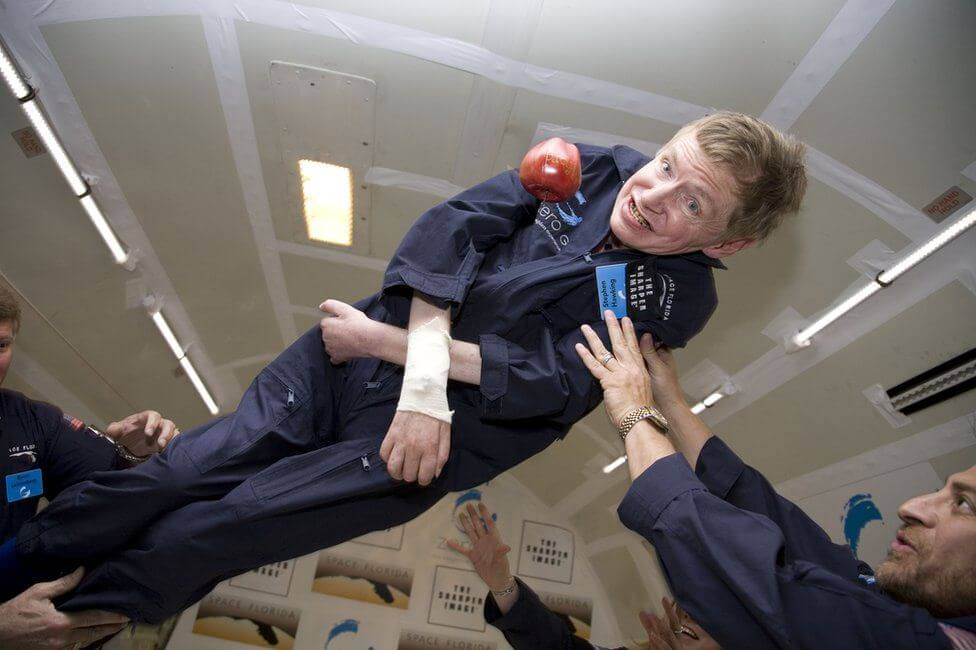

“ကျွန်တော်တို့ဟာ အသိဉာဏ် နဲနဲ ပိုမြင့်တဲ့ မျောက်တွေပါ” ဒီစကားကို ပြောခဲ့ သူကတော့ ရူပဗေဒ ပညာရပ်မှာ အိုင်းစတိုင်းနဲ့ နှိုင်းယှဉ်ခြင်း ခံရတဲ့၊ အိုင်းစတိုင်းနဲ့ တန်းတူ သတ်မှတ်ခံခဲ့ရတဲ့ ရူပဗေဒ ပညာရှင်ကြီး စတီဖင် ဟော့ကင်း (Stephen Hawking) ပဲ ဖြစ်ပါတယ်။ ဒီစကားကို ၁၉၈၈ ခုနှစ်က ဂျာမန်သတင်းစာ ဒါစပီဂဲလ် (Der Spiegel) နဲ့ အင်တာဗျူးမှာ ပြောခဲ့တာပဲ ဖြစ်ပါတယ်။
ကျွန်တော်တို့ဟာ သာမန်ကြယ်လေးတစ်လုံးကို ပတ်နေတဲ့ သာမန် ဂြိုလ်သေးသေးလေး တစ်လုံးပေါ်မှာ နေထိုင်ကြတဲ့ အသိဉာဏ် နဲနဲမြင့်တဲ့ မျောက်တွေပါ။ ဒါပေမယ့် ဒီမျောက်တွေက စကြာဝဠာကြီးအကြောင်း နားလည်ကြတယ်။ ဒီအချက်က ကျွန်တော်တို့ကို သာမန်ထက် ထူးခြားစေတယ်လေ။စတီဖင် ဟော့ကင်း Stephen Hawking စတီဖင် ဟော့ကင်းဟာ amyotrophic lateral sclerosis (ALS) လို့ခေါ်တဲ့ အာရုံကြော ရောဂါ ခံစားနေရသူ ဖြစ်ပါတယ် ။ ဒီရောဂါကြောင့် ကိုယ်ခန္ဓာ တစ်ခုလုံး လှုပ်ရှားနိုင်စွမ်းမရှိတော့လို့ လက်တွန်းလှည်းပေါ် အသက်ရှင်နေရသူ ဖြစ်ပါတယ်။ စကားလဲ မပြောနိုင်လို့ ကွန်ပြူတာ အကူအညီနဲ့ စကားပြောရပါတယ်။ သူဟာ အာကာသ စကြာသဠာနဲ့ ပါတ်သက်ပြီး အရေးပါတဲ့ သီအိုရီ အမြောက်အများကို ရှာဖွေတွေ့ရှိခဲ့သလို အရေးပါတဲ့ ဟောကိန်းတွေကို လဲ ထုတ်ဖေါ်ခဲ့လို့ အာကာသ ရူပဗေဒ (Astrophysics) ဘာသာရပ်မှာ အိုင်းစတိုင်းနဲ့ တန်းတူ အလေးထား ခံခဲ့ရသူ ဖြစ်ပါတယ်။

သိပ္ပံပညာရှင်ကြီး စတီဖင်ဟော့ကင်းဟာ အသက် ၇၆ နှစ်အရွယ်မှာ ၂၀၁၈ ခုနှစ် မတ်လ ၁၄ ရက်နေ့က ကွယ်လွန်သွားခဲ့ပြီ ဖြစ်ပါတယ်။ သူ့ရဲ့ အရိုးပြာတွေကို ဝက်စ်မင်စတာ ဘုရားကျောင်းကြီး (Westminster Abbey) ထဲမှာ ကမ္ဘာ့စွဲအားကို ရှာဖွေတွေ့ရှိခဲ့တဲ့ အိုင်းဇက် နယူတန်နဲ့ သက်ရှိတို့ရဲ့ ဆင့်ကဲဖြစ်စဉ်ကို ရှာဖွေတွေ့ရှိခဲ့တဲ့ ချားလ်စ် ဒါဝင်တို့ရဲ့ ဂူနှစ်ခုကြားမှာ ဂူသွင်းခဲ့ပါတယ်။
သူ့ရဲ့ ကျန်ရှိတဲ့ ကိုယ်ပိုင် ပစ္စည်း ၂၂ ခုကိုလေလံတင် ရောင်းချခဲ့ပါတယ်။ အဲ့သည့်ပစ္စည်းတွေထဲမှာ သူ့ရဲ့ ဘွဲ့ယူကျမ်းတွေနဲ့ သူအသုံးပြုခဲ့တဲ့ ဘီးတပ်လှည်းတွေ ပါဝင်ပါတယ်။ ဒီပစ္စည်းတွေ ရောင်းချရငွေဟာ ပေါင်စတာလင် ၁.၈ သန်း (၂.၅ သန်းခန့်) ရရှိခဲ့ပါတယ်။
၂၀၁၉ မှာတော့ ဗြိတိသျှ အစိုးရက သူ့ကိုဂုဏ်ပြုတဲ့ အနေနဲ့ ပြား ၅၀ တန်် ငွေအကြွေ ရိုက်နှိပ်ထုတ်ဝေခဲ့ပါတယ်။